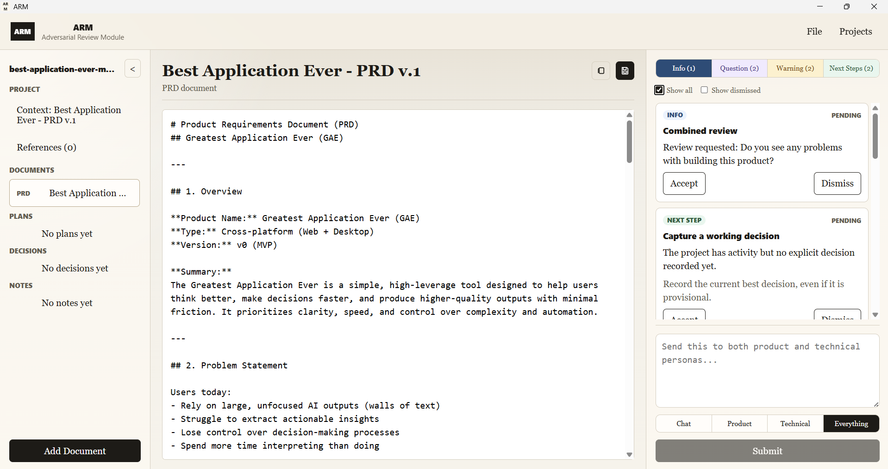

ARM
Adversarial review for product decisions.
ARM is a local desktop application for Windows, macOS, and Linux. It helps teams review product ideas, PRDs, RFCs, and plans before code is written.
ARM does not generate giant project documents. It works against the document you already have and returns small review cards: risks, contradictions, gaps, questions, scope cuts, actions, and decision candidates.
You accept, reject, or edit each card. Nothing changes unless you approve it.

ARM vs BMAD
BMAD produces artifacts. ARM controls decisions.
BMAD is a role-based workflow system. It uses agent-style roles like PM, architect, developer, and QA to turn project input into large planning artifacts: PRDs, architecture notes, stories, checklists, and implementation guidance. It tries to create broad coverage quickly by simulating the documents and handoffs a software team would normally produce.
That can be useful when the goal is fast artifact generation, but it creates a control problem. Long generated documents are difficult to audit. Key flows can be missed inside polished prose. Small wording changes can shift meaning. New requirements can appear during regeneration. The user still has to inspect, maintain, and reconcile the output across the SDLC.
ARM approaches the same pre-build problem from the opposite direction. It does not generate the project for you. It reviews the document you already have, returns small critique cards, and lets you accept, reject, or edit each proposed change. The goal is tighter direction, better control, and more correct decisions.
| Behavior | BMAD | ARM |
|---|---|---|
| Generates large documents | ✓ | ✕ |
| Produces small critique cards | ✕ | ✓ |
| Depends on comprehensive documentation | ✓ | ✕ |
| Works against your current document | ✕ | ✓ |
| High output volume | ✓ | ✕ |
| Fast to evaluate | ✕ | ✓ |
| Can hide missed flows in polished text | ✓ | ✕ |
| Can introduce subtle requirement drift | ✓ | ✕ |
| Requires user-approved changes | ✕ | ✓ |
| Tracks decisions, notes, and open questions | ✕ | ✓ |
| Creates a reviewable audit trail | ✕ | ✓ |
| Optimized for speed and output | ✓ | ✕ |
| Optimized for direction and correctness | ✕ | ✓ |
BMAD generates output faster. ARM helps you produce better documentation.
Get Started
Clone ARM and run the desktop app.
ARM is a desktop application. Use the README for the full setup, or start with the commands below.
1. Clone the repository
git clone https://github.com/BranchPointLabs/arm-adversarial-review-module.git
cd arm-adversarial-review-module/arm
npm install2. Run in development mode
npm run tauri dev3. Build for your platform
Run this on Windows, macOS, or Linux to package the desktop application for that platform.
npm run tauri build